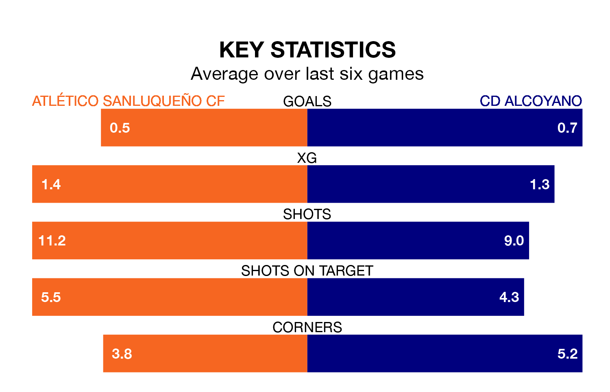

Atlético Sanluqueño CF host CD Alcoyano on Saturday at the Estadio El Palmar in Primera Division RFEF Group 2.
In their last league match, on Sunday, Atlético Sanluqueño drew with Mérida AD 0-0 away.
Alcoyano lost, 1-0 at home against Granada B.
Atlético Sanluqueño are in disappointing form in Primera Division RFEF Group 2, with one win and two draws from their last six games.
With a win and three draws over that period, Alcoyano's form is slightly better – they have taken six points from 18, compared to the home side's five.
With 32 goals in 34 games so far this season, Atlético Sanluqueño are scoring at below the league average rate with 0.9 goals per game. And they are conceding at an average rate, letting in 37 goals at a rate of 1.1 per game.
The visitors are also below average scorers, with 1.0 goal per game, compared to a league average of 1.1. They have also conceded 1.0 goal per game.
In Francisco Mwepu, Atlético Sanluqueño have one of the league's most on-form strikers so far this season. He has notched seven goals in 21 appearances, to sit sixth in the scoring charts.
His goal rate of one every 208 minutes is quicker than that of Imanol García Lugea, Alcoyano's top scorer with a goal every 364 minutes, and a total of four goals in 21 games.
The hosts are 14th in the table after 34 games, of which they have won nine and drawn 12, earning 39 points.
Alcoyano are four places ahead of Atlético Sanluqueño in 10th, with 12 wins and nine draws putting them on 45 points.
In the last three years, Atlético Sanluqueño and Alcoyano have played each other on three occasions. Alcoyano won two of them and they drew once.
Their last meeting was on August 27, when Alcoyano won 3-1 at home.
Updated: 10:44 (UTC), 30/04/24